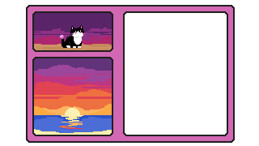

You settle on the sand, watching as the sky slowly darkens. Bright oranges and yellows give way to pinks and purples. Stars begin to poke through the sunset's veil. For a beautiful moment, they shine in tandem with the rays of the sun. The ocean laps at your feet, and you feel your breath slow to the rhythm of the waves. They carve into the sand, its soft grain mimicking the ebb and flow of the tide. As it recedes, the sand is smoothed over. Everything in this world is ephemeral, you think. And yet, certain things seem to repeat. The tide returns to the land just as you always return to the beach. Why here? Perhaps this beach is where everything connects. The sky meets the sea, the day meets the night, and if you just reached out, you're sure you could pluck a star from the sky. The sun kisses the horizon, bathing everything in golden orange. For just a moment, you feel eternal. Water splashes against your foot. Perhaps another time. You will join your siblings one day, but for now, you rejoice in your corporeality. You can return home or stay a while longer.